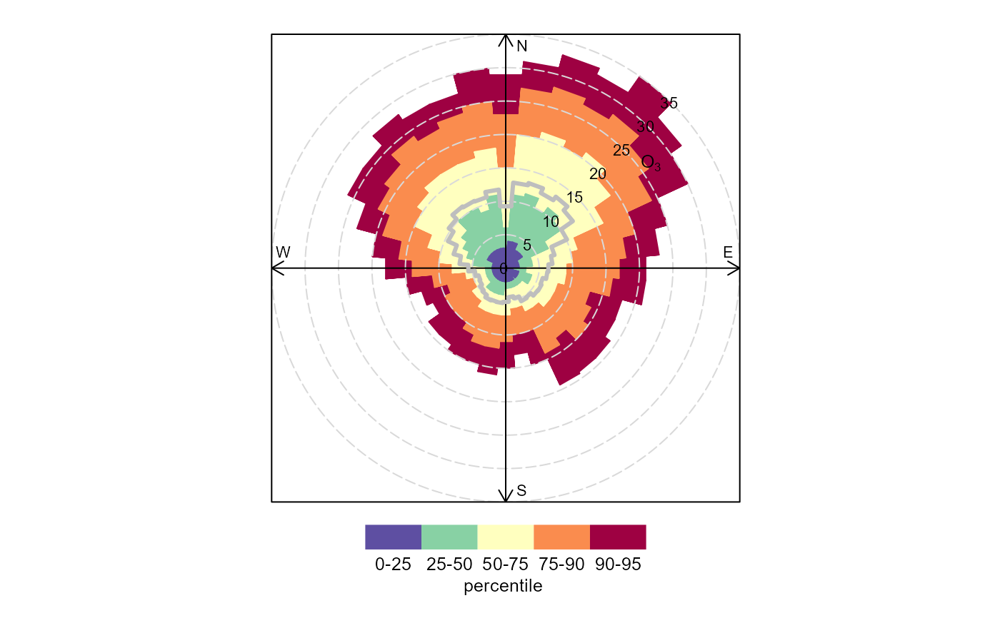
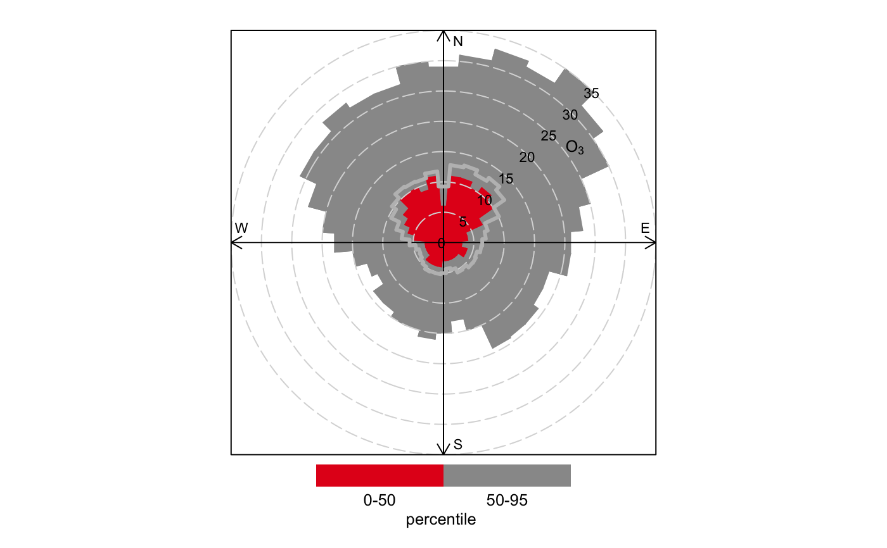

percentileRose plots percentiles by wind direction with
flexible conditioning. The plot can display mutiple percentile
lines or filled areas.
percentileRose( mydata, pollutant = "nox", wd = "wd", type = "default", percentile = c(25, 50, 75, 90, 95), smooth = FALSE, method = "default", cols = "default", angle = 10, mean = TRUE, mean.lty = 1, mean.lwd = 3, mean.col = "grey", fill = TRUE, intervals = NULL, angle.scale = 45, auto.text = TRUE, key.header = NULL, key.footer = "percentile", key.position = "bottom", key = TRUE, ... )
| mydata | A data frame minimally containing |
|---|---|
| pollutant | Mandatory. A pollutant name corresponding to a
variable in a data frame should be supplied e.g. |
| wd | Name of the wind direction field. |
| type |
It is also possible to choose Type can be up length two e.g. |
| percentile | The percentile value(s) to plot. Must be between
0--100. If |
| smooth | Should the wind direction data be smoothed using a cyclic spline? |
| method | When |
| cols | Colours to be used for plotting. Options include
“default”, “increment”, “heat”,
“jet” and |
| angle | Default angle of “spokes” is when |
| mean | Show the mean by wind direction as a line? |
| mean.lty | Line type for mean line. |
| mean.lwd | Line width for mean line. |
| mean.col | Line colour for mean line. |
| fill | Should the percentile intervals be filled (default) or
should lines be drawn ( |
| intervals | User-supplied intervals for the scale e.g.
|
| angle.scale | The pollutant scale is by default shown at a 45
degree angle. Sometimes the placement of the scale may interfere
with an interesting feature. The user can therefore set
|
| auto.text | Either |
| key.header | Adds additional text/labels to the scale key.
For example, passing options |
| key.footer |
|
| key.position | Location where the scale key is to plotted.
Allowed arguments currently include |
| key | Fine control of the scale key via |
| ... | Other graphical parameters are passed onto
|
As well as generating the plot itself,
percentileRose also returns an object of class
“openair”. The object includes three main components:
call, the command used to generate the plot; data,
the data frame of summarised information used to make the plot;
and plot, the plot itself. If retained, e.g. using
output <- percentileRose(mydata, "nox"), this output can
be used to recover the data, reproduce or rework the original
plot or undertake further analysis.
An openair output can be manipulated using a number of generic
operations, including print, plot and
summary.
percentileRose calculates percentile levels of a pollutant
and plots them by wind direction. One or more percentile levels
can be calculated and these are displayed as either filled areas
or as lines.
The wind directions are rounded to the nearest 10 degrees,
consistent with surface data from the UK Met Office before a
smooth is fitted. The levels by wind direction are optionally
calculated using a cyclic smooth cubic spline using the option
smooth. If smooth = FALSE then the data are shown in
10 degree sectors.
The percentileRose function compliments other similar
functions including windRose,
pollutionRose, polarFreq or
polarPlot. It is most useful for showing the
distribution of concentrations by wind direction and often can
reveal different sources e.g. those that only affect high
percentile concentrations such as a chimney stack.
Similar to other functions, flexible conditioning is available
through the type option. It is easy for example to consider
multiple percentile values for a pollutant by season, year and so
on. See examples below.
percentileRose also offers great flexibility with the scale
used and the user has fine control over both the range, interval
and colour.
Ashbaugh, L.L., Malm, W.C., Sadeh, W.Z., 1985. A residence time probability analysis of sulfur concentrations at ground canyon national park. Atmospheric Environment 19 (8), 1263-1270.
See Also as windRose,
pollutionRose, polarFreq,
polarPlot
David Carslaw
# basic percentile plot percentileRose(mydata, pollutant = "o3")  # 50/95th percentiles of ozone, with different colours percentileRose(mydata, pollutant = "o3", percentile = c(50, 95), col = "brewer1")  if (FALSE) { # percentiles of ozone by year, with different colours percentileRose(mydata, type = "year", pollutant = "o3", col = "brewer1") # percentile concentrations by season and day/nighttime.. percentileRose(mydata, type = c("season", "daylight"), pollutant = "o3", col = "brewer1") }